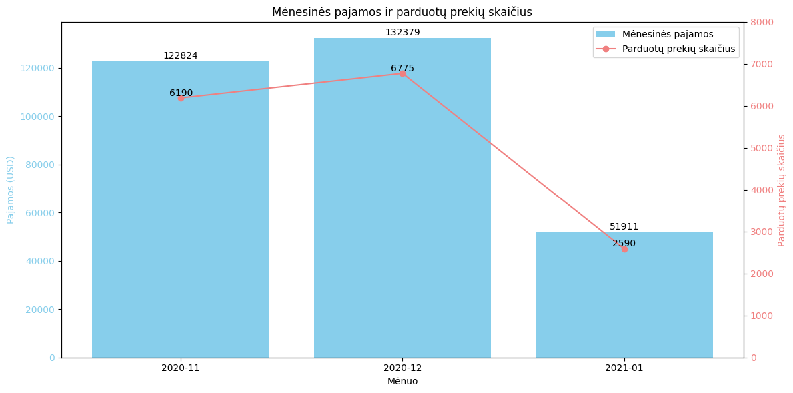
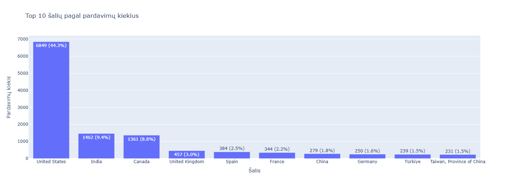
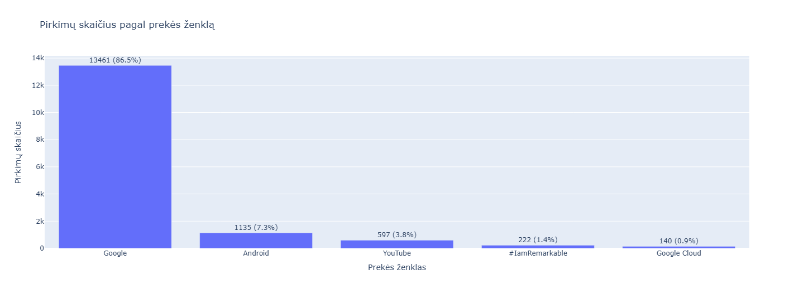
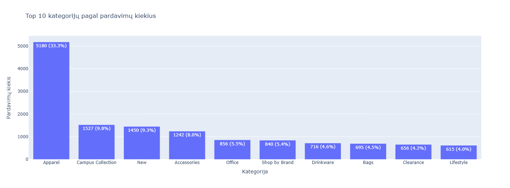
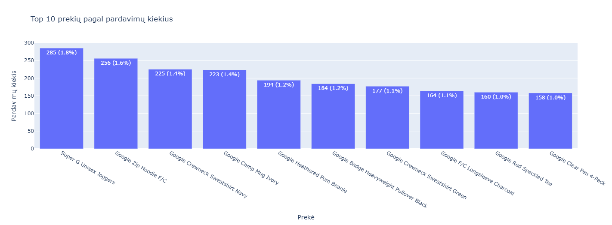
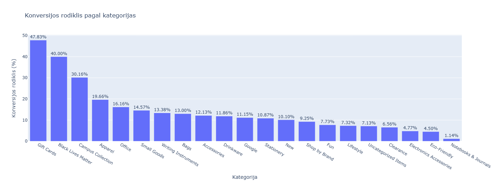
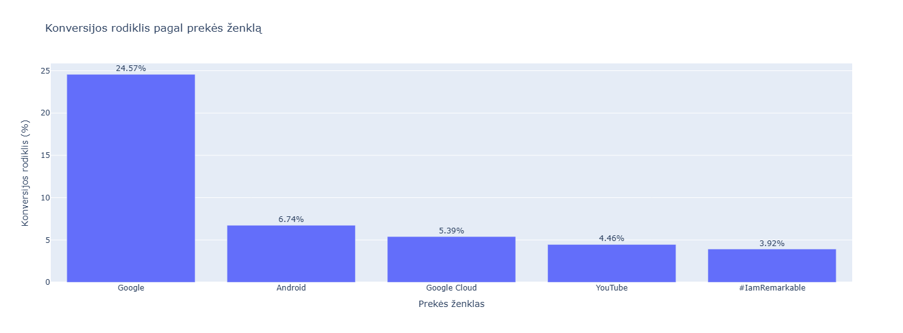
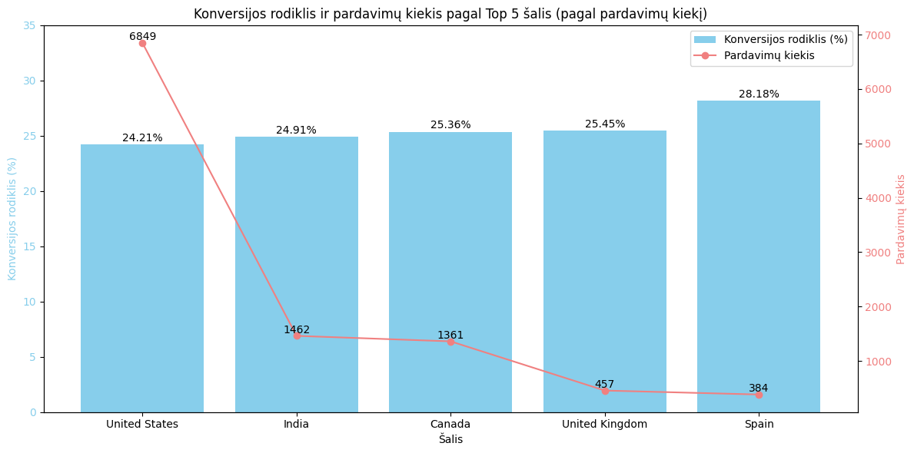
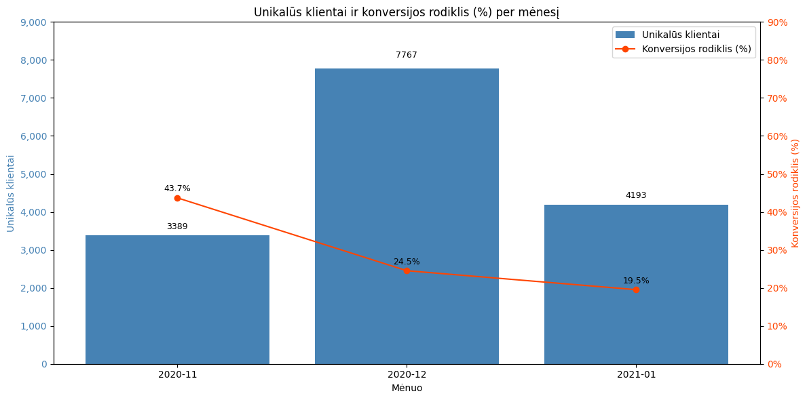

📊 Google Merchandise – Vizualinė ataskaita
🧭 Turinys
1. Mėnesinės pajamos ir parduotų prekių skaičius

2. Top 10 šalių pagal pardavimų kiekius

3. Pirkimų skaičius pagal prekės ženklą

4. Top 10 kategorijų pagal pardavimų kiekius

5. Top 10 prekių pagal pardavimų kiekius

6. Konversijos rodiklis pagal kategorijas

7. Konversijos rodiklis pagal prekės ženklą

8. Konversijos ir pardavimų kiekis pagal Top 5 šalis

9. Unikalūs klientai ir konversijos rodiklis per mėnesį
